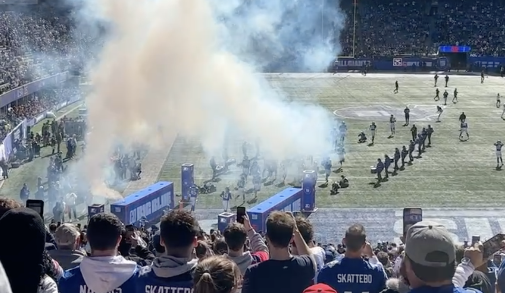

New Orleans Saints
34
FINAL
New York Giants
27
Loss
Sunday, October 18, 2026 · 1:00 PM ET · MetLife Stadium, East Rutherford, NJ · TV: FOX
Record: 3-2-1
Game Recap
The Giants led 10-0 late in the second quarter, then allowed the Saints to score 34 unanswered points.
Down 34-10, the Giants benched Jameis Winston after his second interception and turned to J.J. McCarthy, who threw for 243 yards in just over 11 minutes and sparked a 17-point rally. With 12 seconds left, McCarthy's fourth-and-one endzone pass to Isaiah Likely fell incomplete, ending New York's three game unbeaten streak.

Score by Quarter
| Team | Q1 | Q2 | Q3 | Q4 | Final |
|---|---|---|---|---|---|
| Saints | 0 | 10 | 17 | 7 | 34 |
| Giants | 7 | 3 | 0 | 17 | 27 |
Giants Stat Leaders
Passing
J.J. McCarthy
243 yards, 1 TD, 1 INT
Rushing
J.J. McCarthy
26 yards
Receiving
Malik Nabers
12 catches, 165 yards
Team Stats
| Stat | Giants | New Orleans Saints |
|---|---|---|
| Total yards | 461 | 319 |
| Passing yards (net) | 377 | 144 |
| Rushing yards | 84 | 175 |
| Completions / attempts | 25/47 | 16/30 |
| Passing TD / INT | 2 / 3 | 3 / 0 |
| First downs | 23 | 18 |
| Turnovers | 4 | 1 |
| Sacks allowed | 5 | 0 |
| Penalties - yards | 10 - 73 | 7 - 52 |
| Time of possession | 28:58 | 31:02 |
Scoring Summary
- Q1 - Tyrone Tracy Jr. 17-yard TD catch from Jameis Winston (NYG 7-0)
- Q2 - Dominik Zvada 34-yard field goal (NYG 10-0)
- Q2 - Saints 58-yard field goal (NYG 10-3)
- Q2 - Bryce Lance 2-yard TD catch from Tyler Shough (10-10)
- Q3 - Alvin Kamara 31-yard TD catch from Tyler Shough (NO 17-10)
- Q3 - Tyler Shough 1-yard TD run (NO 24-10)
- Q3 - Saints 51-yard field goal (NO 27-10)
- Q4 - Chris Olave 18-yard TD catch from Tyler Shough (NO 34-10)
- Q4 - Tyrone Tracy Jr. 5-yard TD run, plus 2-point conversion to Isaiah Likely (NO 34-18)
- Q4 - Isaiah Likely 24-yard TD catch from J.J. McCarthy, 2-point try failed (NO 34-24)
- Q4 - Dominik Zvada 41-yard field goal (NO 34-27)
Watch the Highlights
Catch the best plays from this game on YouTube, or browse the official team video page.
Watch on YouTube Giants.com Video